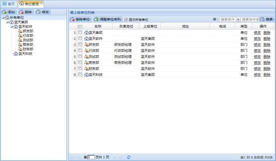
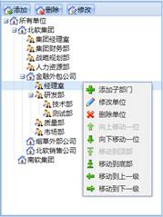
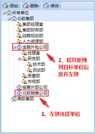
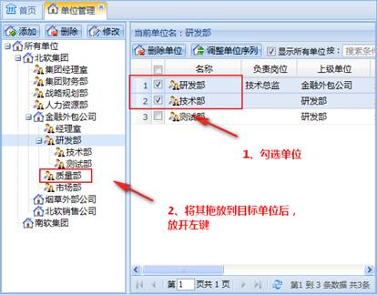

单位管理功能主要为维护单位（部门）目录提供支持，包括增删改单位（部门），调整单位（部门）序列，搜索单位（部门）操作。
在系统菜单里选择单位管理，工作区会显示单位管理模块信息。工作区左边显示的是单位目录，右边显示单位列表区，单位列表区上面是工具栏，如下图所示：

图 单位管理
1、添加单位
（1）添加单位：通过单位目录工具栏的“添加”按钮或单位目录“所有单位”的右键菜单“添加单位”添加。
（2）添加子单位：在单位目录中选择要添加子单位的单位，然后通过单位目录工具栏的“添加”按钮或单位目录右键菜单“添加子单位”添加。在添加子单位界面类型可以选择部门或单位。
（3）添加子部门：在单位目录中选择要添加子部门的部门，然后通过单位目录工具栏的“添加”按钮或单位目录右键菜单“添加子部门”添加。
注意：
1、单位电话允许填入数字和“-”（“-”的个数不能超过两个，例如：010-88568905-99）。
2、创建部门时，部门地址是自动获取其上级单位的地址，可以手工修改。
3、单位目录中“所有单位”下一级只能添加单位。
4、部门下只能添加部门，也就是说部门的下级只能是部门。
2、修改单位
在单位目录中选择一个要修改的单位，然后通过单位目录工具栏的“修改”按钮或单位目录右键菜单“修改单位”修改；在单位列表中选择一个要修改的单位，然后通过单位列表右键菜单的“修改单位”或单位列表操作区的“修改”修改。
注意：
1、修改的单位没有上级单位，则此单位不能修改为部门。
2、修改的单位有上级单位，但是有子单位，则此单位不可修改为部门。
3、如果要修改的部门其上级是部门，那么此部门不可修改为单位。
3、删除单位
（1）删除一个单位：在单位目录中选择一个要删除的单位，通过单位目录工具栏的“删除”按钮或单位目录右键菜单“删除单位”删除；在单位列表中选择一个要删除的单位，通过单位列表工具栏“删除单位”按钮或右键菜单“删除单位”或单位列表操作区的“删除”删除。
（2）批量删除单位：在单位列表中选择多个要删除的单位，通过单位列表工具栏的“删除单位”按钮删除。
注意：
删除单位时，有子单位（或部门）的单位不能删除，应先删除子单位（或部门）；有下级部门的部门不能删除，应先删除下级部门。
4、查看单位
在单位列表中选择要查看的单位，然后通过右键菜单的“查看单位”查看单位详细信息。
5、显示所有单位
（1）勾选单位列表的“显示所有单位”：在单位列表中选择一个单位，则单位列表中显示选中单位及其子单位。
（2）不勾选单位列表的“显示所有单位”：在单位列表中选择一个单位，则单位列表中显示选中单位的子单位。
调整单位顺序有以下几种方式：
1、首先在单位目录中选择一个单位，选择单位列表工具栏的“单位序列调整”按钮，然后在弹出的序列调整界面列表中选择一个要调整顺序的单位，根据需要通过“最上”、“上移”、“下移”、“最下”按钮来调整单位的顺序。单位顺序调整完毕后，选择“关闭”按钮返回单位管理界面。
注意：
单位序列调整界面显示的是单位目录里所选单位的子单位（或部门），并不包含子单位的下级单位（或部门）以及部门的子部门。
2、通过单位目录右键菜单的操作来调整单位顺序，如下图所示：

图 调整单位顺序
注意：
右键菜单“移动到上一级”的意思是单位移动后将和其上级单位平级。“移动到下一级”的意思是单位移动后将成为其上一位同级单位的子单位。
3、在单位目录通过鼠标拖拽调整单位之间的顺序，如下图所示：

图 拖拽调整单位顺序
注意：
1、部门不能拖拽到“所有单位”下，也就是说“所有单位”的一级子单位不能是部门。
2、单位不能拖拽到部门上，也就是说部门的下一级不能有单位。
3、父单位不能拖拽到子单位中。
4、拖拽时进行了单位（部门）重名判断，即同一级别的单位（部门）不能重名。
5、将单位列表中的一个或多个单位（部门）向单位目录中拖拽，如下图所示：

图 拖拽调整单位顺序
在单位目录中选择一个单位，然后在单位列表工具栏选择“搜索条件”，填写“搜索值”，最后选择“搜索”按钮搜索。